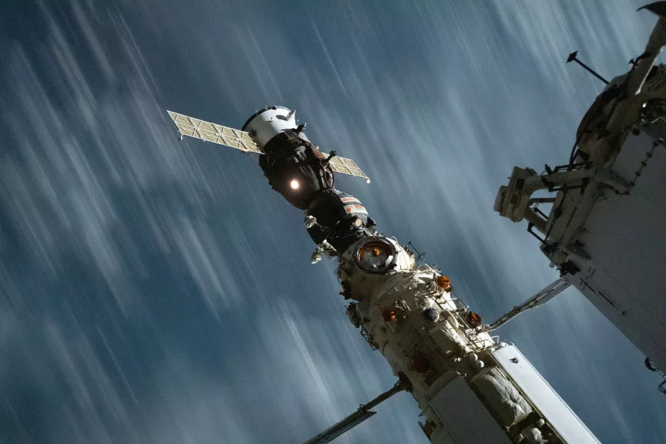

အခု ဖြစ်စဉ်မှာ မှားယွင်းပြီး ဒုံးစက် နိုးသွားတဲ့ အာကာသ ယာဉ်ကတော့ ရုရှား အာကာသယာည် ဆိုယု MS-18 ပဲ ဖြစ်ပါတယ်။ ဒီ အာကာသ ယာဉ်ဟာ အပြည်ပြည် ဆိုင်ရာ အာကာသ စခန်းယာဉ်မှာ ဆိုက်ကပ် ထားတဲ့ အာကာသယာဉ် ဖြစ်ပါတယ်။ ဒီ ဆိုယု အာကာသ ယာဉ်ဟာ ယာဉ်မှူး အိုလက် နိုဗစ်စကီ (Oleg Novitskiy)၊ ရုပ်ရှင် ဒါရိုက်တာ ကလင် ရှီပန်ကို (Klim Shipenko) နဲ့ သရုပ်ဆောင် ယူလီယာ ပီရီဆစ် (Yulia Peresild) တို့ကို သယ်ဆောင်ပြီး ကမ္ဘာမြေကို ပြန်လာဖို့ စောင့်ဆိုင်းနေတာ ဖြစ်ပါတယ်။
ဒီ အာကာသ ယာဉ်ဟာ အထက်ပါ ယာဉ်အဖွဲ့ကို သယ်ဆောင်ပြီး ကမ္ဘာမြေကို အောက်တိုဘာ ၁၇ ရက်နေ့မှာ ပြန်လာဖို့ ဖြစ်ပါတယ်။ အဲ့သည် အပြန် ခရီးအတွက် စမ်းသပ်မှု အနေနဲ့ အောက်တိုဘာ ၁၅ ရက်နေ့မှာ ယာဉ်ရဲ့ ဒုံးစက်တွေကို နှိုးပြီး စမ်းသပ် ခဲ့ပါတယ်။
“ဒုံးစက်တွေဟာ စမ်းသပ်မှု ကာလ ပြီးမြောက် သွားပေမယ့်လဲ ပိတ်မသွားပဲ ဆက်ပြီး နိုးနေ ခဲ့ပါတယ်။ ဒီ့အတွက် အပြည်ပြည် ဆိုင်ရာ အာကာသ ယာဉ်ရဲ့ ပျံသန်းတဲ့ အမြင့်ဟာ မနက် ၅.၁၃ နာရီ ခန့်မှာ လျှော့ကျ သွားခဲ့ပါတယ်” လို့ နာဆာ အာကသ အေဂျင်စီရဲ့ သတင်း ထုတ်ပြန်ချက်မှာ ဖေါ်ပြ ထားပါတယ်။
“ဒီလို ဖြစ်ပြီး မိနစ် ၃၀ အတွင်းမှာ ပျံသန်းမှု ထိန်းချုပ်ရေး ဝန်ထမ်းတွေက အာကာသ စခန်းရဲ့ အမြင့်ကို မူလ အမြင့် ပြန်ရောက်အောင် စွမ်းဆောင် နိင်ခဲ့ ကြပါတယ်။ ယခု သတင်း ထုတ်ပြန်တဲ့အ ချိန်မှာ အပြည်ပြည် ဆိုင်ရာ အာကာသ စခန်းဟာ တည်ငြိမ်တဲ့ အနေအထားကို ပြန်ရောက် သွားပါပြီ” လို့ နာဆာရဲ့ သတင်း ထုတ်ပြန်ချက်မှာ ဆက်လက် ဖော်ပြ ထားပါတယ်။
“ဒီ ဖြစ်စဉ် ကာကအတွင်း အာကာသ ယာဉ်မှူးတွေ အားလုံး နိုးနေခဲ့ပြီး စိုးရိမ်စရာ အန္တရာယ် မရှိခဲ့ဘူး” လို့ နာဆာရဲ့ထုတ်ပြန်ချက်မှာ ပါရှိပါတယ်။
ဒီ ဖြစ်စဉ် အတွင်း အပြည်ပြည် ဆိုင်ရာ အာကာသ စခန်းဟာ ပျံသန်းတဲ့ အမြင့်ပဲ ကျသွားခဲ့တာ မဟုတ်ပါဘူး။ ဘေးဖက်ကိုလဲ ၅၇ ဒီဂရီ စောင်းသွားပါသေးတယ် လို့ ရုရှား နိုင်ငံရဲ့ အင်တာဖက်စ် (Interfax) သတင်းဌာန ကလဲ ကြေငြာ သွားပါတယ်။
အာကာသယာဉ်မှူးတွေနဲ့ အာကာသ စခန်း အင်ဂျင်နီယာတွေဟာ အခုလို ဒုံးစက် မတော်တဆ နိုးနေတာ ဘာကြောင့်လဲ ဆိုတာကို အဖြေရှာလို့ မရကြ သေးပါဘူး။ နာဆာနဲ့ ရုရှား အာကာသ အေဂျင်စီ ရော့စ်ကော့စ်မောစ် (Roscosmos) က အင်ဂျင်နီယာ တွေဟာ ဒီကိစ္စကို ပူးပေါင်းပြီး စုံစမ်း စစ်ဆေး မှုတွေ ပြုလုပ်နေကြပါတယ်။
ဒီ ဒုံးစက် မရပ်ပဲ ဆက်နိုးနေတာ ဘာ့ကြောင့် ဆိုတာ မသိသလိုပဲ ဘယ်လို လုပ်ပြီး သူ့အလိုလို ရပ်သွားရ တာလဲ ဆိုတာကိုလဲ အဖြေရှာလို့ မရကြပါဘူး။
ရုရှား အာကာသ အေဂျင်စီ မြေပြင် စခန်းက အင်ဂျင်နီယာ တွေကတော့ ဒီဒုံးစက်တွေ သူ့အလိုလို ရပ်သွားရတာက သူတို့ရဲ့ ဒုံးစက်တွေက လောင်ဆာရည် လောင်ကျွမ်းဖို့ သတ်မှတ်ချက် ပြည့်သွားတာမို့ လောင်စာ ပို့တဲ့ စနစ်က ဖြတ်တောက် ပစ်လိုက်လို့ ရပ်သွားတာလို့ ယူဆ ကြပါတယ်။ အခု လက်ရှိ မှာတော့ ဒီ ဒုံးစက်ကို ဒီဒုံးစက်တွေရဲ့ မှတ်တမ်းတွေကို ပြန်လည် စစ်ဆေး ကြည့်ရှုနေတယ် လို့ ပြောပါတယ်။

ရုရှား အင်ဂျင် နီယာ တွေကတော့ ဇူလိုင် ၂၉ ဖြစ်စဉ်ဟာ Software အမှားကြောင့် ဖြစ်လာတယ်လို့ ယူဆကြပါတယ်။
အောက်တိုဘာ ၁၅ ရက် ဖြစ်စဉ်ကြောင့် အာကာသ စခန်းကြီး တိမ်းစောင်းသွား ခဲ့ပေမယ့်လဲ ဒီ ဆိုယု ၁၈ အာကာသ ယာဉ်ကတော့ မူလ အစီအစဉ် အတ်ိုင်း ယာဉ် အဖွဲ့သား ၃ ဦးကို တင်ဆောင်ပြီး ကမ္ဘာမြေ ပေါ်ကို အောင်မြင်စွာ ပြန်လည် ဆင်းသက် နိုင်ခဲ့ပါတယ်။ ဒီ ဆိုယုယာဉ်ဟာ အောက်တိုဘာ ၁၆ ရက်က အပြည်ပြည် ဆိုင်ရာ အာကာသ စခန်း ကနေ ထွက်ခွာ လာခဲ့ပြီး နောက် ၃ နာရီ ၃၀ မိနစ် အကြာမှာတော့ မြေပြင်ကို အောင်မြင်စွာ ပြန်လည် ဆင်းသက် နိုင်ခဲ့ပါတယ်။
ဒီ ရုပ်ရှင် ရိုက်ကူးရေး အဖွဲ့ဟာ အာကာသ ထဲမှာ ၁၂ ရက် ကြာအောင် နေထိုင်ခဲ့ပြီး ရုရှား ရုပ်ရှင် ဇာတ်ကား Challenge ရဲ့ ဇါတ်ဝင်ခန်း တွေကို အပြည်ပြည် ဆိုင်ရာ အာကာသ စခန်းပေါ်မှာ ရိုက်ကူးခဲ့တာ လို့ သိရပါတယ်။